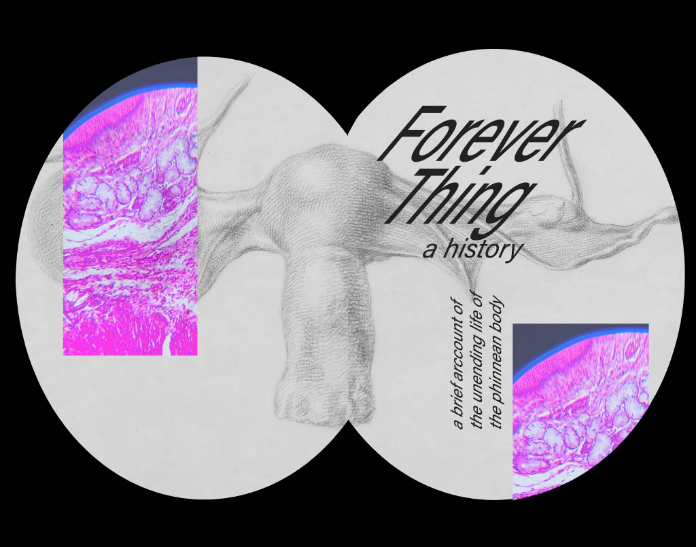
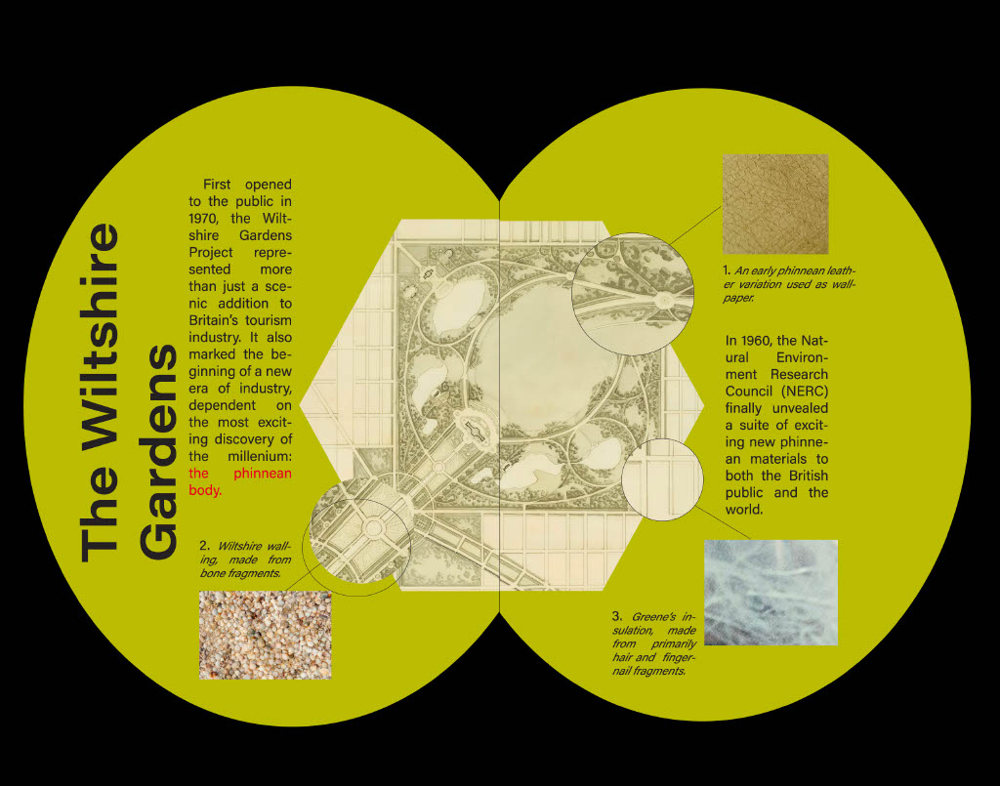
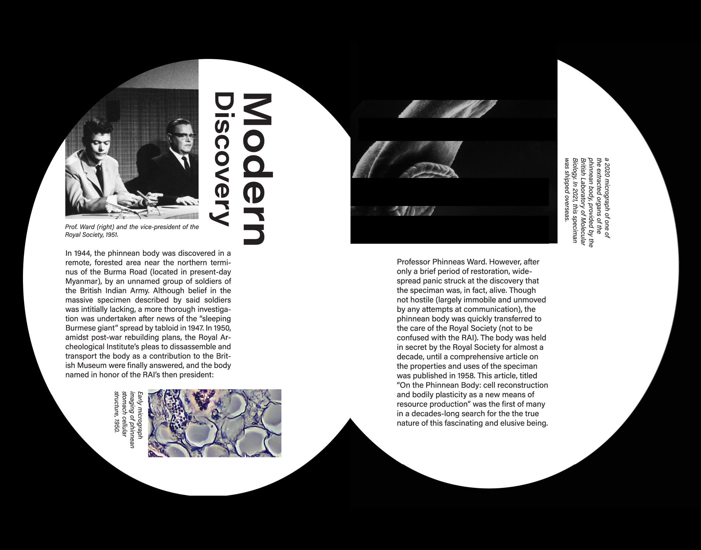
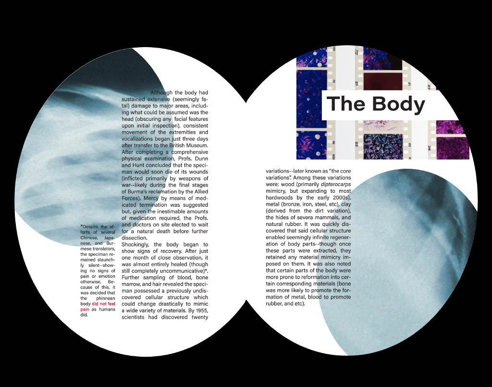
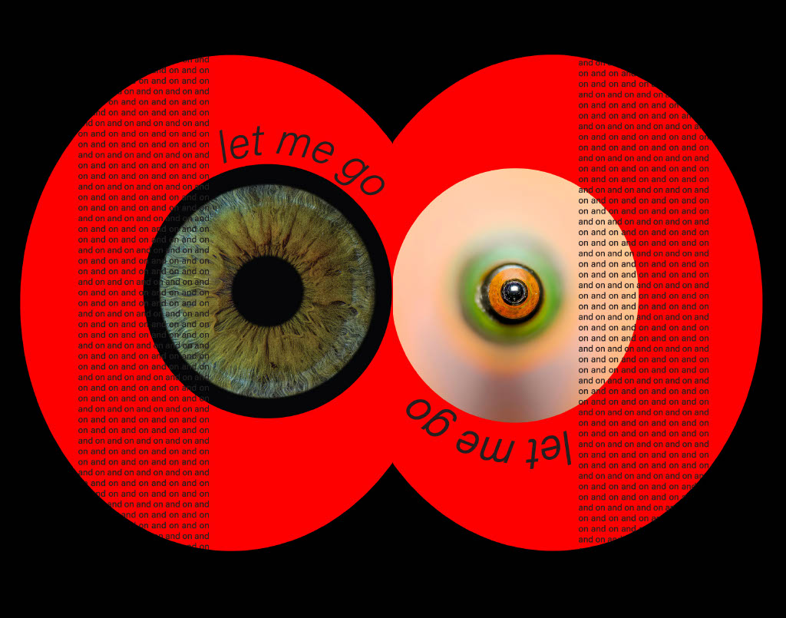
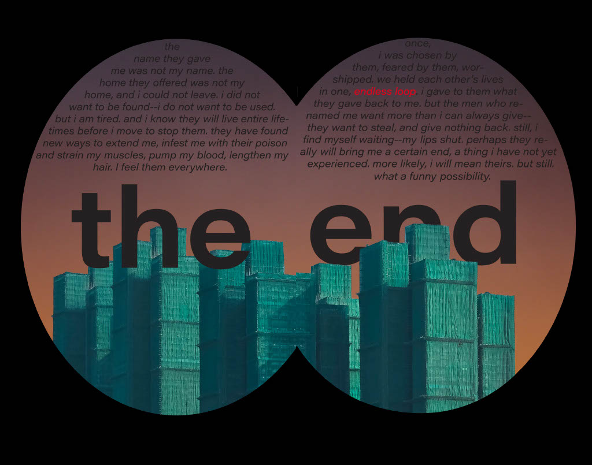

April 2025
Course: Letterforms & Type
For this project, I was initially only given the word "infinity" and free reign to explore its implications through a small zine. I was inspired to create both a graphic and written narrative about an immortal creature--including elements such as oval-shaped pages and symmetrical imagery to call back to the original theme. I used color and text size/alignment to make certain pages feel more or less like newspaper spreads or scientific articles--juxtaposing them against saturated, emotionally evocative spreads from the creature's perspective. I also included consistent imagery from both the natural world and the human body, hoping to give the never directly depicted creature a thematic presence.